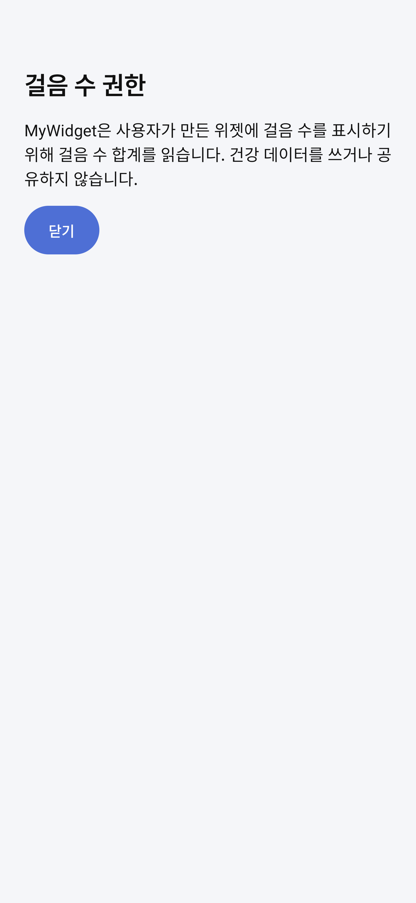
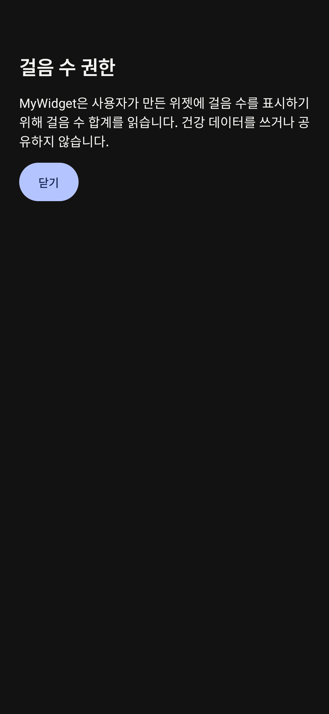

Health Connect 권한 설명
권한 안내
- 화면 ID
health-rationale- 모듈
- MyWidget :app
- 진입 경로
- Health Connect 권한 요청·사용 내역 → Rationale Activity 또는 alias
- 구현 방식
- Jetpack Compose
- 주요 상태
- 권한 설명
- 닫기
- 테마
- 라이트
- 다크
- 반복 UI
- 읽기 화면
- 단일 CTA
- 평가
- 시스템 바 인셋과 스크롤이 짧은 창 및 큰 글꼴에서도 설명과 닫기를 접근 가능하게 합니다.
- 적용 상태
- safeDrawing 인셋·헤딩·스크롤·최소 닫기 영역 적용
- 코드 조사
- 코드 조사 완료
- 화면 확인
- 컴포넌트 렌더 확인
- 실행 근거
- API 35 기본 560dpi, 411dp 폭, fontScale 1.0에서 라이트·다크 Compose 샘플을 네이티브 캡처했습니다. 범위는 권한 설명·닫기입니다. API 35에서 실제 권한 안내 컴포저블이 320×200dp·글꼴 2배·다크에서 스크롤되고 닫기 버튼이 표시됨을 확인했습니다. Health Connect 권한 핸드오프는 미확인입니다.
- 접근 조건
- Activity 자체는 테스트 인텐트로 실행할 수 있습니다. 시스템에서 들어오는 경로는 Health Connect 설치·지원 상태가 필요합니다.
구현 위치
HealthConnectRationaleActivity·MyWidget/app/src/main/java/com/mywidget/editor/feature/health/HealthConnectRationaleActivity.kt:31HealthConnectRationaleContent·MyWidget/app/src/main/java/com/mywidget/editor/feature/health/HealthConnectRationaleActivity.kt:45
사용 컴포넌트
Android 네이티브 예시
아래 캡처에 표시된 상태와 기기 조건을 확인했습니다.

411 × 891 dp · 560 dpi · 글꼴 1배 · API 35 · ko-KR
캡처 기준 HEAD
28c96a452 · 소스 지문 2926a62326fe · 2026-11-13T13:54:53.964821Z
411 × 891 dp · 560 dpi · 글꼴 1배 · API 35 · ko-KR
캡처 기준 HEAD
28c96a452 · 소스 지문 2926a62326fe · 2026-11-13T13:54:53.964821Z